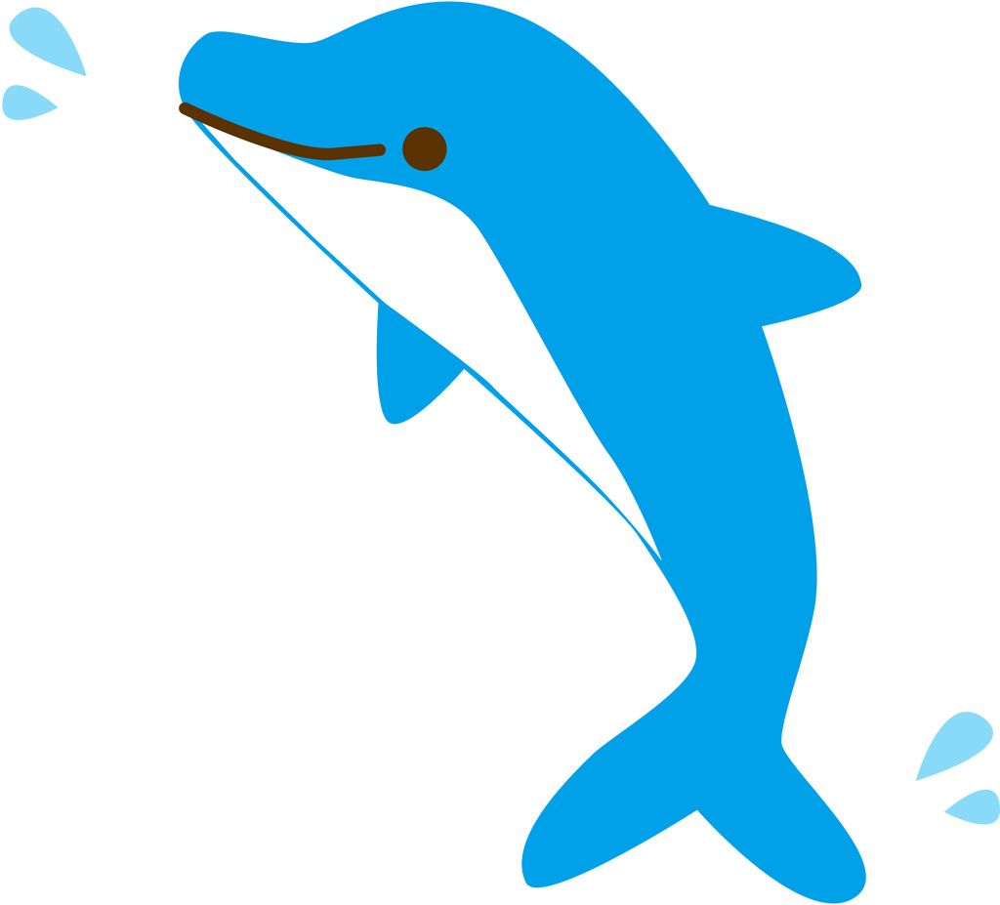

window.onload = function() { var itemContainer = document.getElementById('item-container'); console.log(itemContainer); console.log(itemContainer.getAttribute('position')); itemContainer.setAttribute('position', '0 0 0'); console.log(itemContainer.getAttribute('position')); };
